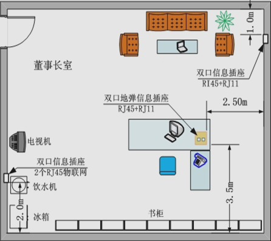
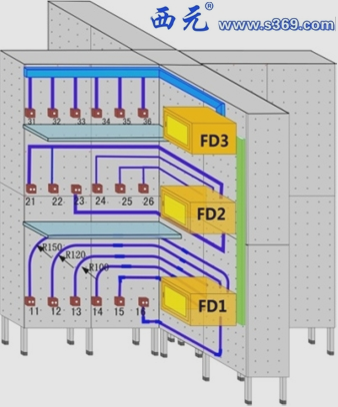

重要提示：
1. 提交方式：电子邮件（ouxinyu@hust.edu.cn 或 14777591@qq.com）
2. 每次作业的所有文件请压缩为一个文件，并命名为 “学号_姓名_作业名称.rar (或*.zip)”。
3. 将该压缩文件以标题 “学号_姓名_作业名称” 发送至上述指定邮箱。
4. 因文件名错误而导致无法正常收取或无法记录作业成绩，由提交者自行负责。
5. 作业成绩将作为平时成绩，计入本门课程的最终成绩，因此请认真对待。
| 序号 | 章节 | 作业描述 | 提交截止时间 |
|---|---|---|---|
| 1 | 单元一 认识综合布线 |
作业名称：认识综合布线 作业目的：对综合布线系统有一个初步的了解。 习题内容 1. 综合布线的基本概念是什么，有几种形式。 2. 建筑群子系统的三种敷设方式是什么，各有什么优缺点。 3. 在西元教学模型图片上标注出七个子系统。 4. 完成教材P23-P24的习题。 注意事项： 1. 习题1-3使用Word完成，并提交到指定邮箱，命名为“学号_姓名_作业名称.rar (或*.zip，*.docx, *.pdf)”。 2. 习题4不需要提交，请自行在书本上完成。 3. 习题3所用图片底图：Image_1_001.png |
2018年3月29日 |
| 2 | 单元五 工作区子系统 |
作业名称：工作区子系统设计 作业目的：熟悉工作区子系统的设计方法。 习题内容: 1. 使用Visio或AutoCAD设计你宿舍的综合布线图，如下图所示，需要简要绘制出你宿舍的家具示意图和布局。 2. 直接提交.vsd、.png、.dwg文件至指定邮箱，文件名为“学号_姓名_作业名称”  |
2018年5月10日 |
| 3 | 单元六 水平子系统 |
作业名称：水平子系统设计 作业目的：熟悉水平子系统的设计方法。 习题内容: 1. 使用Visio或AutoCAD设计你宿舍的综合布线图，如下图所示，需要简要绘制出水平系统的示意图和布局。 2. 直接提交.vsd、.png、.dwg文件至指定邮箱，文件名为“学号_姓名_作业名称” 3. 设计图说明：楼层共计1-3，信息点1-3为房间一，4-6为房间二，例如：31为三楼第一间房301室，34为三楼第二间房302室。FD管理间为每层楼第三间房，例如FD3安置在303室。考虑三种水平布线方案中的一种或多种的组合。  |
2018年5月17日 |
| 4 |
{kind=link}